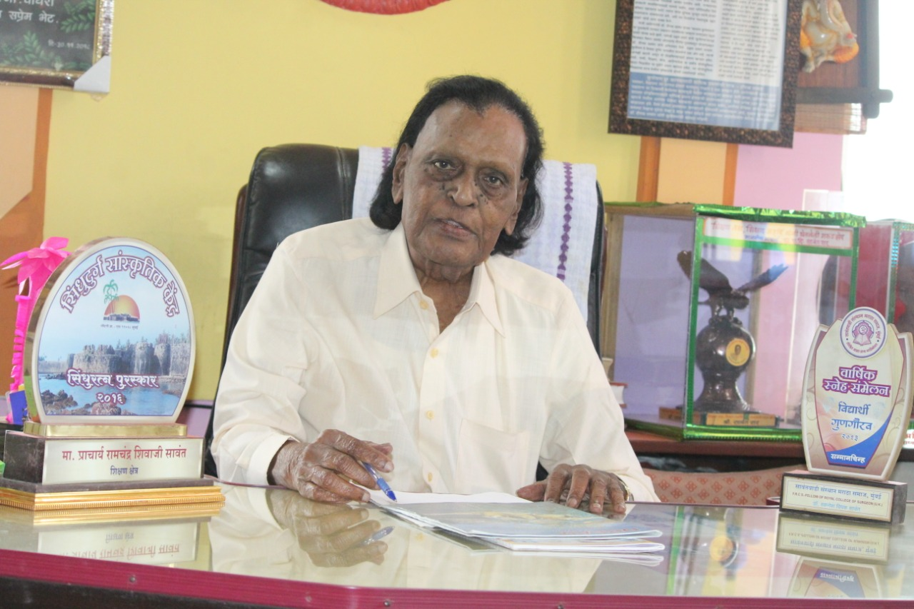
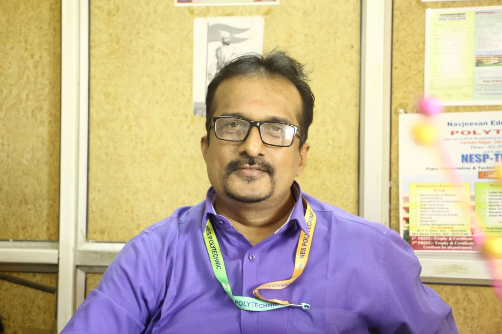
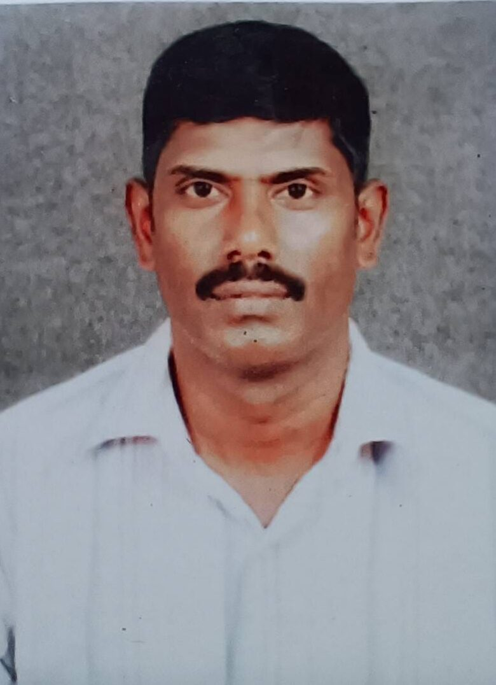

Navjeevan Education Society’s Polytechnic was established in the academic year 1995–96 with the approval of the Government of Maharashtra and the Directorate of Technical Education (DTE). The institute is affiliated to the Maharashtra State Board of Technical Education (MSBTE), Mumbai.
Since its inception, the institute has focused on providing quality education, modern infrastructure, and experienced faculty to ensure holistic development of students through practical and industry-oriented learning.
From the academic year 2025–26, the institute has introduced Bachelor of Technology (B.Tech) programmes affiliated to Dr. Babasaheb Ambedkar Technological University (DBATU), Maharashtra.
The institute continues to prepare students for successful careers, higher education, and responsible contributions to society with a strong foundation of ethics and professionalism.
To deliver transformative engineering education through cutting-edge technology, immersive learning, and interdisciplinary collaboration.
To foster innovation, ethical values, and entrepreneurial mindsets that address real-world challenges and societal needs.
To empower students as creators, problem-solvers, and global leaders in a rapidly evolving technological world.
To ignite young minds with innovation-driven engineering education that inspires creativity, curiosity, and excellence.
To become a hub of sustainable technology, advanced research, and entrepreneurship, contributing meaningfully to national and global development.
To shape ethical, skilled, and future-ready engineers who transform society through knowledge, responsibility, and innovation.

Founder
Navjeevan Education Society

Educational Qualification :
M.Tech (Gold Medal), Ph.D.
Area of Specializations :
Geo Thermal Engineering
Work Experience :
Teaching – 19+ Years
Industry – 01 Year
